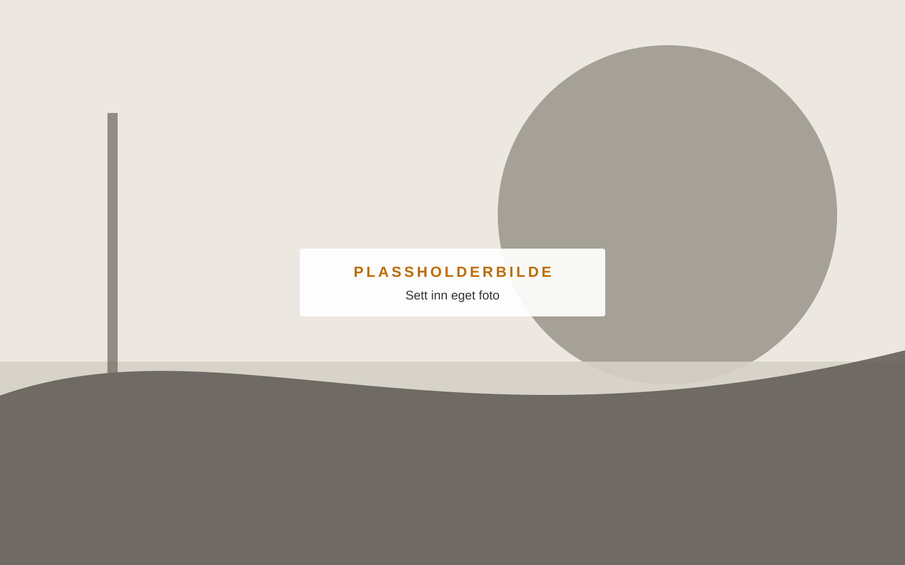
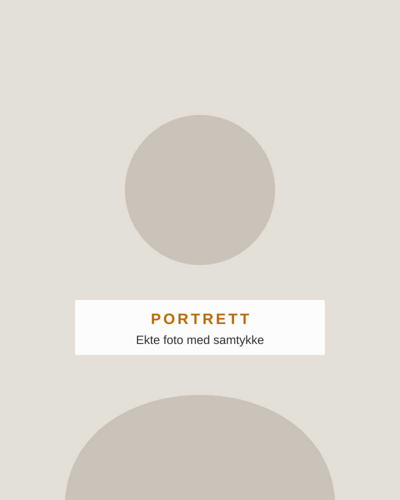

Hvilken betydning har kong Haralds ord og handlinger hatt for følelsen av tilhørighet
blant mennesker med minoritetsbakgrunn i Norge?
Tekst: [Navn]Foto: [Navn][Publisert dato]Lesetid
Foto: [Fotograf / NTB]
01 · Åpning
Åpning ~150 ord«Nordmenn er jenter som er glad i jenter, gutter som er glad i gutter, og jenter og gutter som er glad i hverandre.»
Talen handlet ikke bare om toleranse, men om hvem som får være en del av det norske fellesskapet. Kongen beskrev et samfunn der mennesker med ulik bakgrunn ikke står utenfor nasjonen, men er en del av den.
Ti år senere er spørsmålet fortsatt aktuelt: Er Norge blitt det inkluderende samfunnet kongen beskrev, eller finnes det fortsatt et gap mellom idealene og virkeligheten?
Dette er et redaksjonelt utkast som kan brukes videre. Det må suppleres med dokumentert mottakelse av talen og intervjuer.
Er kongen en konge for alle?
Norge i Tall
Her har jeg funnet og kontrollert de nyeste tallene fra Statistisk sentralbyrå (SSB).
Bakgrunn ~200 ord[Gi leseren konteksten: kongens rolle som samlende symbol, og et Norge der stadig flere har bakgrunn fra andre land. Bruk tall med kilde (SSB) og fakta fra bakgrunnsundersøkelsene deres.]
[Avsnitt 2 – hva har kongen sagt og gjort om mangfold og tilhørighet? Hver opplysning trenger kilde.]

[Bildetekst for arkivbildene: hva, hvor, årstall.]Foto: [Fotograf / byrå]
03 · Kongens tale fra 2016
[Mellomtittel om talen]
Talen ~250 ord[Beskriv talen om norsk identitet og mangfold: når, hvor og for hvem den ble holdt. Kontroller dato og sted mot kongehuset.no.]
Ordrett sitat[Lim inn et ordrett utdrag fra talen, kopiert fra den offisielle teksten på kongehuset.no. Ikke gjengi fra hukommelsen.]
«LIM INN ORDRETT UTDRAG HER»
[Hvordan ble talen mottatt? Bruk dokumenterte reaksjoner med kilde.]
[Hva sier talen om hvem som er «norsk»? Knytt den til hovedspørsmålet.]
[Kort, sterkt sitat fra et intervju eller talen]
04 · Personlige erfaringer
[Mellomtittel for erfaringer]

Foto: [Fotograf]
[Navn, alder]
Person 1 ~170 ord[Hvem er personen? Bakgrunn, hvor hen bor, hva hen gjør. Hvilken erfaring har personen med å føle seg inkludert i Norge?]
[Hva tenker person 1 om kongen og talen? Bruk direkte og indirekte sitater.]
[Ordrett sitat fra intervjuperson 1]
— [Navn, alder]
▶
Hør [Navn] fortelle
[Kort beskrivelse av klippet, lengde]
Foto: [Fotograf]
[Navn, alder]
Person 2 ~170 ord[Presentér person 2 – gjerne med et annet perspektiv enn person 1.]
[Erfaringene til person 2, med sitater.]
Foto: [Fotograf]
[Navn, alder]
Person 3 ~160 ord[Presentér person 3 og erfaringene hens.]
[Erfaringene til person 3, med sitater.]
05 · Refleksjon
[Mellomtittel for refleksjon]
Refleksjon ~300 ord[Sammenlign erfaringene: Hvor er intervjupersonene enige, og hvor er de uenige?]
[Perspektiv A, f.eks. «Ordene betyr noe»]
[Ordrett sitat]
— [Navn]
[Perspektiv B, f.eks. «Ord er ikke nok»]
[Ordrett sitat]
— [Navn]
[Ekspertintervju: Hva er kongens rolle, og hva betyr han for fellesskapet? Presentér eksperten med navn, tittel og arbeidssted.]
[Ordrett sitat fra eksperten]
— [Navn, tittel, institusjon]
[Hva kan ord, symboler og representasjon bety for følelsen av å høre til – og hvor går grensene?]
Kongehuset (2016). [Tittel på talen slik den står på nettsiden]. kongehuset.no/[resten av adressen]. Hentet [dato].
[Bildetekst]Foto: [Fotograf]
06 · Avslutning
Avslutning ~100 ord[Oppsummer hva dere fant ut, og knytt tilbake til åpningen. Avslutt med et sitat eller et bilde som blir sittende i leseren.]
Kilder
[Kongehuset (2016). Tittel på talen. kongehuset.no/URL. Hentet dato.]
Bekreft
Artikkelen bygger på intervjuer med tre personer med minoritetsbakgrunn, et ekspertintervju og kong Haralds offentlige taler.
Alle intervjupersoner har samtykket til å bli sitert og avbildet.
Illustrasjonene i konseptskissen var KI-genererte plassholdere og er ikke brukt i den publiserte artikkelen.
[Tilpass metodenotatet: når og hvordan intervjuene ble gjort, og om noen er anonymisert og hvorfor.]